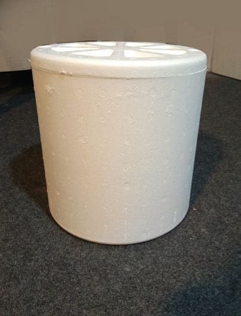

നിങ്ങളും ഇത്തരം കളികളിൽ ഏർപ്പെടാറില്ലേ?
തുടർച്ചയായി കളികളിൽ ഏർപ്പെടുമ്പപോൾ ക്ഷീണം അനുഭവപ്പെടാറില്ലേ?
ക്ഷീണം അനുഭവപ്പെടാൻ എന്താവും കാരണം?
കളിക്കുമ്പപോൾ നാം വിവിധ പ്രവൃത്തികൾ ചെയ്യുന്നുണ്ടല്ലലോ.
പ്രവൃത്തി ചെയ്യാനുള്ള കഴിവിനെയാണ് ഊർജം (Energy) എന്ന് പറയുന്നത്.
ഊർജത്തെ നമുക്ക് കാണാൻ കഴിയില്ല. വിവിധ പ്രവർത്തനങ്ങളിലൂടെ
അത് പ്രകടമാകുന്നു.
ചൂട്, പ്രകാശം തുടങ്ങിയവ നമുക്ക് അനുഭവിക്കാൻ കഴിയുന്ന ഊർജ
രൂപങ്ങളാണ്. നിങ്ങളുടെ വീട്ടിൽ ഊർജം ഉപയോോഗപ്പെടുത്തുന്ന സന്ദർഭങ്ങൾ
ഏതെല്ലാമാണ്? എഴുതിനോോക്കൂ.
l പാചകം ചെയ്യാൻ
l
l
പാചകം ചെയ്യാനുള്ള ഊർജം എന്തിൽ നിന്നെല്ലാമാണ് ലഭിക്കുന്നത്?
108 അടിസ്ഥാനശാസ്ത്രം V
ഏതൊൊക്കെ തരം അടുപ്പുകളാണ് വീടുകളിൽ ഉപയോോഗിക്കുന്നത്?
നിങ്ങളുടെ വീട്ടിൽ ഇവയിൽ ഏതെല്ലാം തരമാണുള്ളത്?
ആഹാരം പാകം ചെയ്യുന്നതിനാണല്ലോോ അടുപ്പ് ഉപയോോഗിക്കുന്നത്. ചൂടിൽ
നിന്നും ഊർജം ലഭിക്കുമ്പോോഴാണ് ആഹാരപദാർഥങ്ങൾ വേവുന്നത്.
ചിത്രത്തിൽ കണ്ട അടുപ്പുകളിൽ താപം ലഭിക്കുന്നതെങ്ങനെയാണ്? ഓരോോ
തരം അടുപ്പിലും കത്തുന്ന വസ്തു ഏതാണ്?
താപം ലഭിക്കുന്നതിന് മറ്റേതെങ്കിലും വസ്തുക്കൾ ഇതുപോോലെ ഉപയോോഗിക്കു
ന്നുണ്ടോോ? എഴുതിനോോക്കൂ.
കത്തുമ്പോോൾ താപം പുറത്തുവിടുന്ന വസ്തുക്കളാണ് ഇന്ധനങ്ങൾ.
വിറക്, മണ്ണെണ്ണ, എൽ. പി. ജി., പെട്രോോൾ, ഡീസൽ, കൽക്കരി തുടങ്ങി
ധാരാളം വസ്തുക്കൾ ഇന്ധനങ്ങളായി ഉപയോോഗിക്കുന്നു.
അടിസ്ഥാനശാസ്ത്രം V 109
കത്താൻ സഹായിക്കുന്നതെന്ത്?
അടുപ്പിൽ വിറക് എപ്പോോഴുംം നന്നായി കത്താറുണ്ടോോ?
വിറകടുപ്പ് നന്നായി കത്താൻ എന്തൊൊക്കെയാണ് ചെയ്യാറുള്ളത്?
l
കുഴൽ ഉപയോോഗിച്ച് ഊതുന്നു.
l
ചിത്രം 6.5
കുഴൽ ഉപയോോഗിച്ച് ഊതുന്നത് എന്തിനാണ്?
കത്താൻ വായു ആവശ്യമുണ്ടടോ?
ഒരു പരീക്ഷണം ചെയ്തുനോോക്കാം.
ഒരേ വലുപ്പമുള്ള രണ്ട് മെഴുകുതിരികൾ എടുക്കുക. രണ്ടും കത്തിച്ചു വയ്ക്കുക.
ഗ്ലാസുകൊൊണ്ട് ഒരു മെഴുകുതിരി മൂടുക. രണ്ടു മെഴുകുതിരികളും നിരീക്ഷിക്കുക.
അവയ്ക്ക് എന്ത് സംഭവിച്ചു?
ഈ പരീക്ഷണത്തിൽനിന്ന് നിങ്ങൾ എത്തിച്ചേർന്ന നിഗമനം എന്താണ്?
പരീക്ഷണക്കുറിപ്പ് തയ്യാറാക്കൂ.
ചിത്രം 6.6
110 അടിസ്ഥാനശാസ്ത്രം V
Page 31
Figure fig_ch01_p031_01 (Page 31)
അടുപ്പ് ഉപയോോഗിക്കുമ്പോോൾ
അടുപ്പിന്റെ ചിത്രം (6.5) നിരീക്ഷിച്ചല്ലോോ. കത്തുമ്പോോൾ ഉണ്ടാകുന്ന താപോോർജം
മുഴുവൻ ഉപയോോഗപ്പെടുത്താനാവുന്നുണ്ടോോ?
താപനഷ്ടം കുറയ്ക്കാൻ എന്തെല്ലാം ചെയ്യാം?
l
പാത്രത്തിനും അടുപ്പിനും ഇടയിൽ വിടവ് കുറവാകണം.
l
l
l
ഇന്ധനങ്ങളുടെ മറ്റ് ഉപയോോഗങ്ങൾ
ബസ് , ലോോറി, മണ്ണുമാന്തിയന്ത്രം തുടങ്ങിയ വലിയ വാഹനങ്ങളിൽ
പൊൊതുവെ ഡീസലാണ് ഇന്ധനമായി ഉപയോോഗിക്കുന്നത്. എന്നാൽ കാർ,
ഓട്ടോോറിക്ഷ തുടങ്ങിയ ചെറിയ വാഹനങ്ങളിൽ പെട്രോാളുംം ഡീസലും
ഗ്യാാസും ഉപയോോഗിക്കുന്നുണ്ട്. ഫാക്ടറികളിൽ കൽക്കരി, ഗ്യാാസ്, നാഫ്ത
തുടങ്ങിയവ ഉപയോോഗിക്കുന്നു. വിമാനങ്ങളിൽ ജറ്റ്ഫ്യുവലാണ് ഇന്ധനമായി
ഉപയോോഗിക്കുന്നത്.
മറ്റെന്തെല്ലാം ആവശ്യങ്ങൾക്കാണ് ഇന്ധനങ്ങൾ ഉപയോോഗിക്കുന്നത്? ചർച്ച
ചെയ്യൂ.
ഉറവിടമെന്ത്?
പെട്രോാൾ, ഡീസൽ തുടങ്ങിയവ പെട്രോാൾപമ്പിലെത്തുന്നത് എങ്ങനെയാ
ണെന്ന് അന്വേേഷിച്ചറിയൂ. ഭൂമിക്കടിയിൽ നിന്ന് ലഭിക്കുന്ന ക്രൂഡോോയിൽ
സംസ്കരിച്ചാണ് ഇവ ഉണ്ടാക്കുന്നത്.
ക്രൂഡോോയിൽ എങ്ങനെയാണ് രൂപപ്പെടുന്നത് എന്നറിയാമോോ?
ലക്ഷക്കണക്കിന് വർഷങ്ങൾക്കുമുമ്പ് മണ്ണിനടിയിൽ അകപ്പെട്ടുപോോയ
ജൈവവസ്തുക്കളിൽ നിന്നാണ് കൽക്കരി, ക്രൂഡോോയിൽ, പ്രകൃതിവാതകം
എന്നിവയുണ്ടാകുന്നത്.
നിത്യയജീവിതത്തിൽ ഉപയോോഗിക്കുന്ന ഇന്ധനങ്ങളായ പെട്രോോൾ, ഡീസൽ,
മണ്ണെണ്ണ എന്നിവയും പാചകത്തിന് ഉപയോോഗിക്കുന്ന എൽ.പി.ജി യും
ക്രൂഡോോയിൽ ശുദ്ധീകരിക്കുമ്പോോൾ ലഭിക്കുന്ന ചില ഉൽപന്നങ്ങളാണ്.
ഡീസൽ, വൈദ്യുുതി എന്നിവ പ്രചാരത്തിലാകുന്നതിന്
മുമ്പ് തീവണ്ടി, കപ്പൽ തുടങ്ങിയവ ഓടിക്കാനും
വ്യയ വ സാ യ ശാ ല ക ൾ
പ്ര വ ർ ത്തി പ്പി ക്കാ നും
കൽക്കരിയാണ് ഇന്ധനമായി ഉപയോോഗിച്ചിരുന്നത്.
ഇപ്പോോൾ താപവൈദ്യുുത നിലയങ്ങളിലാണ് കൽക്കരി
പ്രധാനമായും ഉപയോോഗിക്കുന്നത്.
ചിത്രം 6.10
എൽ.പി.ജി സിലിണ്ടർ
ലക്ഷക്കണക്കിന് വർഷങ്ങൾക്കുമുമ്പ് ഭൂമിയിൽ ജീവിച്ചിരുന്ന ജീവികളുടെ
അവശിഷ്ടങ്ങളിൽനിന്നാണ് ഫോോസിൽ ഇന്ധനങ്ങൾ രൂപപ്പെട്ടത്.
ഇവ ഉപയോോഗിക്കുന്നതിനനുസരിച്ച് തീർന്നുകൊൊണ്ടിരിക്കും. ഇവയെ
പുതുക്കാൻ കഴിയാത്ത ഊർജസ്രോോതസ്സുകൾ (Non-renewable energy
sources) എന്ന് പറയുന്നു.
112 അടിസ്ഥാനശാസ്ത്രം V
ഇന്ധനങ്ങളുടെ വ്യത്യസ്തരൂപങ്ങൾ
പലതരം ഇന്ധനങ്ങളെപ്പറ്റി മനസ്സിലാക്കിയില്ലേ? അവയിൽ ചിലതാണ്.
വിറക്, മണ്ണെണ്ണ, ഡീസൽ, പെട്രോോൾ, ജെറ്റ് ഫ്യുവൽ, നാഫ്ത, കൽക്കരി,
എൽ.പി.ജി. തുടങ്ങിയവ. ഇതുകൂടാതെ മറ്റ് ഇന്ധനങ്ങളുംം കണ്ടെത്തി അവ
ഏതെല്ലാം അവസ്ഥയിലാണെന്നതിനനുസരിച്ച് കൂട്ടങ്ങളാക്കൂ.
ഖരം
ദ്രാവകം വാതകം
............................
.....................................
.....................................
........................
വൈദ്യുുതി ഉപയോോഗിച്ച് പ്രവർത്തിക്കുന്ന തീവണ്ടികളാണ് ഇപ്പോോൾ
കൂടുതലുള്ളത്. ഇന്ധനങ്ങൾക്ക് പകരമുപയോോഗിക്കാവുന്ന ഒരു ഊർജരൂപമാണ്
വൈദ്യുുതി. വൈദ്യുുതി ഇല്ലാത്ത ജീവിതം നമുക്കിന്ന് സങ്കൽപ്പിക്കാൻ പോോലും
ആവില്ലല്ലോോ. എങ്ങനെയായിരിക്കും വൈദ്യുുതി ഉണ്ടാക്കുന്നത്? വൈദ്യുുതി
ഉൽപാദിപ്പിക്കുന്നതിന് വിവിധ രീതികളുണ്ട്.
ജലവൈദ്യുുതി (Hydroelectricity)
ചിത്രത്തിൽ കാണുന്നതുപോോലെ ഒരു ജലചക്രത്തിന്റെ മാതൃക നിർമ്മിച്ച്
പരീക്ഷണം ചെയ്തുനോോക്കാം.
ഉപകരണത്തിന്റെ
നിർമ്മാണക്കുറിപ്പ്
ശാസ്ത്രപുസ്തകത്തിൽ എഴുതൂ.
നിർമ്മാണക്കുറിപ്പിൽ എന്തെല്ലാം?
• ഉപകരണത്തിന്റെ പേര്
• നിർമ്മാണ ലക്ഷ്യം
• ആവശ്യയമായ സാമഗ്രികൾ
• രേഖാചിത്രം
• നിർമ്മാണഘട്ടങ്ങൾ
എങ്ങനെയാണ് ജലചക്രം കറങ്ങിയത്?
ചിത്രം 6.14
വെള്ളം വീഴുന്നതിന്റെ ശക്തി കറക്കത്തിനെ സ്വാധീനിക്കുന്നുണ്ടോോ?
വെള്ളം നിറച്ച കുപ്പിയുടെ ഉയരം മാറ്റിയാൽ കറക്കത്തിന്റെ വേഗതയിൽ മാറ്റം
വരുമോോ?
കെട്ടിനിർത്തിയ ജലത്തിന്റെ ഊർജം ഉപയോോഗപ്പെടുത്തിയാണ് ജലവൈദ്യുുതി
ഉൽപാദിപ്പിക്കുന്നത് . അതിനുവേണ്ടി വെള്ളത്തെ അണക്കെട്ടുകളിൽ
തടഞ്ഞുനിർത്തുന്നു. ഇത് ആവശ്യാനുസരണം താഴേക്ക് പതിപ്പിച്ച് വലിയ
ടർബൈനുകൾ കറക്കി ജനറേറ്റർ പ്രവർത്തിപ്പിച്ച് വൈദ്യുുതി ഉൽപാദിപ്പിക്കുന്നു.
കാറ്റിൽനിന്നും വൈദ്യുുതി
ചിത്രം 6.16
ഓലപ്പമ്പരം
ചിത്രം 6.17
കാറ്റാടിപ്പാടം
കടലാസ് അല്ലെങ്കിൽ ഓല ഉപയോോഗിച്ച് ഒരു പങ്ക നിർമ്മിക്കൂ. നിങ്ങൾ
ഉണ്ടാക്കിയ പങ്കയുമായി പുറത്തേക്കിറങ്ങി നിൽക്കൂ. പങ്ക കറങ്ങുന്നുണ്ടോോ?
എപ്പോോഴാണ് പങ്ക നന്നായി കറങ്ങുന്നത്?
കാറ്റിന് വസ്തുക്കളെ ചലിപ്പിക്കാനുള്ള കഴിവുണ്ട്. ഈ കഴിവ് ഉപയോോഗപ്പെടുത്തി
നമുക്ക് വൈദ്യുുതി ഉൽപാദിപ്പിക്കാം. ഇതിനുള്ള ഉപകരണമാണ് കാറ്റാടിയന്ത്രം
അഥവാ വിന്റ്മിൽ.
വിന്റ്മില്ലിൻ്റെ പങ്കകൾ കറങ്ങുമ്പോോൾ അതുമായി ബന്ധപ്പെടുത്തിയ ടർബൈൻ
കറങ്ങുന്നു. ഈ ഊർജ്ജം ഉപയോോഗിച്ച് ജനറേറ്റർ പ്രവർത്തിപ്പിച്ച് വൈദ്യുുതി
ഉൽപാദിപ്പിക്കുന്നു.
കേരളത്തിൽ രാമക്കൽമേട്, കഞ്ചിക്കോോട്, അട്ടപ്പാടി എന്നിവിടങ്ങളിൽ
കാറ്റിൽനിന്ന് വൈദ്യുുതി ഉൽപാദിപ്പിക്കുന്ന സംവിധാനങ്ങളുണ്ട്.
എന്തുകൊൊണ്ടായിരിക്കും ഇവിടെ കാറ്റാടിയന്ത്രങ്ങൾ സ്ഥാപിച്ചത്?
മനുഷ്യയൻ പണ്ട് മുതലേ ഉപയോോഗപ്പെടുത്തിയിട്ടുള്ള ഊർജരൂപമാണ്
കാറ്റ്. സമുദ്രങ്ങളിലൂടെയും നദികളിലൂടെയുമുള്ള യാത്രയ്ക്ക് കാറ്റിന്റെ ശക്തി
ഉപയോോഗിച്ചിരുന്നു.
കൊൊടുങ്കാറ്റിന് വളരെയധികം ഊർജം ഉള്ളതിനാൽ ഇവ കടുത്ത നാശനഷ്ടങ്ങൾ
ഉണ്ടാക്കും. ഇന്ന് കാലാവസ്ഥാ മുന്നറിയിപ്പിലൂടെ ഇത്തരം കാറ്റുകളുടെ സാധ്യയത
മുൻകൂട്ടി അറിയാനാവും. മുന്നറിയിപ്പുകൾക്കനുസരിച്ച് മുൻകരുതലുകൾ
എടുത്താൽ അപകടങ്ങളുംം നാശനഷ്ടങ്ങളുംം കുറയ്ക്കാനാവും.
അടിസ്ഥാനശാസ്ത്രം V 115
സൂര്യയപ്രകാശത്തിൽ നിന്ന് ഊർജം
പുറത്ത് സൂര്യയപ്രകാശം ലഭിക്കുന്ന സ്ഥലത്ത് ഒരു സ്റ്റീൽ പാത്രം വയ്ക്കുക. കുറച്ചു
കഴിഞ്ഞതിനുശേഷം പാത്രം തൊൊട്ടുനോോക്കൂ. എന്താണ് അനുഭവപ്പെട്ടത്?
കാരണമെന്ത്? പാത്രത്തിൽ കുറച്ച് വെള്ളംകൂടി ഒഴിച്ചാലോോ?
ഏതെല്ലാം രീതിയിലാണ് സൂര്യയപ്രകാശത്തിലെ ഊർജം ഉപയോോഗപ്പെടുത്തുന്നത്?
l
വസ്തുക്കൾ ഉണക്കുന്നതിന്
l
l
സൗൗരോോർജത്തിലെ താപം ഉപയോോഗപ്പെടുത്തുന്ന ഉപകരണങ്ങളാണ് സോോളാർ
കുക്കറുകളുംം സോോളാർ വാട്ടർ ഹീറ്ററുകളുംം.
ഇവയ്ക്ക് പ്രവർത്തിക്കാൻ ആവശ്യയമായ ഊർജം ലഭിക്കുന്നത് എവിടെനിന്നാണ്?
ഇവയിലുള്ള സൗൗരോോർജപാനലുകൾ സൂര്യയപ്രകാശത്തെ വൈദ്യുുതിയാക്കി
മാറ്റുന്നു.
സൗരോോർജപാനലിലുള്ള സൗരോോർജസെല്ലിൽ സൂര്യപ്രകാശം
പതിക്കുമ്പപോൾ വൈദ്യയുതി ഉൽപാദിപ്പിക്കപ്പെടുന്നു.
വീടുകളിലും സ്ഥാപനങ്ങളിലും സൂര്യയപ്രകാശത്തിൽ നിന്ന് വൈദ്യുുതി
ഉൽപാദിപ്പിക്കുന്ന സംവിധാനങ്ങൾ വ്യാപകമായി ഉപയോോഗിക്കുന്നുണ്ട്.
വൈദ്യയുതവാഹനങ്ങൾ
പച്ചനിറത്തിലുള്ള നമ്പർ പ്ലേറ്ററോടുകൂടിയ വാഹനങ്ങൾ നിങ്ങൾ
ശ്രദ്ധിച്ചിട്ടുണ്ടടോ?
അവയുടെ പ്രത്യയേകതകൾ എന്തെല്ലാമാണ്?
l
l
ചിത്രം 6.23
നമ്മുടെ നാട്ടിൽ ഏതെല്ലാം വിഭാഗത്തിൽപ്പെട്ട വൈദ്യുുത വാഹനങ്ങൾ ഉണ്ടെന്ന്
നിരീക്ഷിച്ച് ശാസ്ത്രപുസ്തകത്തിൽ എഴുതൂ.
പുതുക്കാൻ കഴിയുന്ന ഊർജസ്രോാതസ്സുകൾ
സൂര്യയപ്രകാശം, കാറ്റ്, തിരമാല തുടങ്ങിയ ഊർജസ്രോാതസ്സുകളുടെ പ്രത്യേേകതകൾ
എന്തെല്ലാമാണ്?
അടിസ്ഥാനശാസ്ത്രം V 117
സൂര്യയപ്രകാശം, കാറ്റ്, തിരമാല തുടങ്ങിയവ ഉപയോോഗിക്കുന്നതിനനുസരിച്ച്
തീർന്നുപോോകുന്നവയല്ല. ഇവ പുതുക്കാൻ കഴിയുന്ന ഊർജസ്രോാതസ്സുകൾ
(Renewable energy sources) എന്ന് അറിയപ്പെടുന്നു. ഈ ഊർജസ്രോോതസ്സുകൾ
വായുമലിനീകരണം ഉണ്ടാക്കുന്നില്ല.
കൊൊച്ചിൻ എയർപോോർട്ട്
പൂർ ണ്ണമാ യും
സൗൗ രോോ ർ ജം കൊൊണ്ട്
പ്രവർത്തിക്കുന്ന ലോോകത്തിലെ ആദ്യയത്തെ
വിമാനത്താവളമാണ് കൊൊച്ചിയിലേത് .
ഈ അന്താരാഷ്ട്ര വിമാനത്താവളത്തിന്റെ
മുഴുവൻ പ്രവർത്തനങ്ങൾക്കും ആവശ്യയമുള്ള
വൈദ്യുുതി ഉൽപാദിപ്പിക്കുന്നത് സൗൗരോോർജ
പാനലുകൾ ഉപയോോഗിച്ചാണ്.
ചിത്രം 6.24
ബയോോഗ്യാാസ്
പാരിസ്ഥിതികപ്രശ് നങ്ങൾ ഉണ്ടാക്കുന്ന ജൈവമാലിന്യയങ്ങളിൽ നിന്ന്
ഇന്ധനമുണ്ടാക്കാം. ഇങ്ങനെയുണ്ടാക്കുന്ന വാതക ഇന്ധനമാണ് ബയോോഗ്യാാസ്.
നമ്മുടെ സ്കൂളിലും വീട്ടിലും ബയോോഗ്യാാസ് പ്ലാന്റ് സ്ഥാപിക്കുന്നതുകൊൊണ്ടുള്ള
ഗുണങ്ങൾ എന്തെല്ലാമാണ്?
ഒരു ബയോോഗ്യാാസ് പ്ലാന്റിൻ്റെ പ്രവർത്തനരീതി കണ്ടുമനസ്സിലാക്കൂ.
ഊർജോോൽപാദനത്തിനുള്ള വ്യയത്യയസ്തവഴികൾ നാം പരിചയപ്പെട്ടല്ലോോ.
ഇതുകൊൊണ്ടു മാത്രം നമ്മുടെ ഊർജാവശ്യയങ്ങൾ പരിഹരിക്കപ്പെടുമോോ?
ചിത്രം 6.25
118 അടിസ്ഥാനശാസ്ത്രം V
Page 39
Figure fig_ch01_p039_01 (Page 39)

Figure fig_ch01_p039_02 (Page 39)
താഴെ നൽകിയിരിക്കുന്ന മാർഗങ്ങളുംം ഊർജോോൽപാദനത്തിന് ഉപയോോഗപ്പെടു
ത്തുന്നുണ്ട്.
l
ഡീസൽ, കൽക്കരി താപനിലയങ്ങൾ
l തിരമാലയിൽ നിന്നുള്ള ഊർജം
l
ഭൂതാപോോർജം
l
അണുശക്തി
ചൂടാറാപ്പെട്ടി
ഇന്ധന ഉപഭോോഗം കുറയ്ക്കാനുള്ള ഒരു മാർഗം ഊർജനഷ്ടം
തടയലാണ്. ഭക്ഷണത്തിന്റെ ചൂട് നഷ്ടപ്പെടാതെ
സൂക്ഷിക്കാനും പാതിവെന്ത ഭക്ഷണം പൂർണ്ണമായി
വെന്തുകിട്ടാനും ഉപയോോഗിക്കുന്ന വളരെ ലളിതമായ ഒരു
ഉപകരണമാണ് ചൂടാറാപ്പെട്ടി. ചൂട് പുറത്തുപോോകാതെ
തടഞ്ഞുനിർത്തിയാണ് ഇവിടെ ഊർജം ലാഭിക്കുന്നത്.
ഇതുപോോലെ ഊർജനഷ്ടം തടയുന്ന മറ്റെന്തെല്ലാം
ഉപകരണങ്ങൾ വീടുകളിൽ ഉപയോോഗിക്കുന്നുണ്ട്?
കണ്ടെത്തിയെഴുതൂ.
ചിത്രം 6.26
ഭാവിയുടെ ഇന്ധനങ്ങൾ
ഫോോസിൽ ഇന്ധനങ്ങളുടെ വിവിധ ഉപയോോഗങ്ങൾ മനസ്സിലാക്കിയല്ലോോ.
ഇവയുടെ പരിമിതികൾ എന്തെല്ലാമാണ്?
l
ഉപയോോഗിക്കുന്നതിനനുസരിച്ച് തീർന്നുപോോകുന്നു.
l
ഈ
പ രി മി തി ക ൾ
ഇ ല്ലാ ത്ത
ഊ ർ ജസ്രോോ ത സ്സു ക ളാ ണ ല്ലോോ
സൂര്യയപ്രകാശം, കാറ്റ്, തിരമാല തുടങ്ങിയവ. എന്നാൽ എല്ലായിടത്തും
എല്ലാക്കാലത്തും ഒരേപോോലെ സൂര്യയപ്രകാശം ലഭിക്കാറുണ്ടോോ?
കാറ്റിന്റെ വേഗത ഒരു പോോലെയാണോോ?
തിരമാലയുടെ കാര്യയത്തിലോോ?
ഇവയിൽ നിന്ന് എപ്പോോഴുംം ഒരേ അളവിൽ ഊർജം ഉൽപാദിപ്പിക്കാൻ കഴിയില്ല.
ഈ പരിമിതികൾ മറികടക്കുന്ന പുതിയ ഊർജസ്രോോതസ്സുകൾ കണ്ടെത്താനുള്ള
ശ്രമത്തിലാണ് ശാസ്ത്രലോോകം. ഹൈഡ്രജൻ, ജൈവ ഡീസൽ എന്നിവ ഇത്തരത്തിൽ
പ്രതീക്ഷ നൽകുന്ന ഇന്ധനങ്ങളാണ്. ഇത്തരം ഇന്ധനങ്ങളെക്കുറിച്ച് കൂടുതൽ
വിവരങ്ങൾ ശേഖരിച്ച് റിപ്പോോർട്ട് തയ്യാറാക്കൂ.
അടിസ്ഥാനശാസ്ത്രം V 119
വിലയിരുത്താം
1. താഴെപ്പറയുന്നവ അനുയോോജ്യയമായ രീതിയിൽ തരംതിരിക്കുക. എന്ത്
അടിസ്ഥാനത്തിലാണ് തരംതിരിച്ചതെന്നും എഴുതുക.
പെട്രോാൾ, കൽക്കരി, സൗൗരോോർജം, കാറ്റിൽനിന്നുള്ള വൈദ്യുുതി,
ജലവൈദ്യുുതി, ഡീസൽ
2
ക്രൂഡോോയിൽ സംസ്കരിക്കുമ്പോോൾ ലഭിക്കുന്ന ഉല്പന്നങ്ങളെ ചേർത്ത്
ആശയപടം പൂർത്തിയാക്കുക
ബിറ്റുമിൻ
ക്രൂഡോോയിൽ
നാഫ്ത
പാരഫിൻ
3.
ഇപ്പോോഴുംം ആളുകൾ വിറകടുപ്പ് ഉപയോോഗിക്കുന്നുണ്ടല്ലോോ. വിറകടുപ്പിൻ്റെ
കാര്യയക്ഷമത കൂട്ടുന്നതിന് എന്തെല്ലാം ചെയ്യാം? നിങ്ങളുടെ നിർദ്ദേശങ്ങൾ
എഴുതൂ.
നിങ്ങളുടെ അയൽപക്കത്തുള്ള അഞ്ചു വീടുകളിൽ പാചകത്തിന് ഏതെല്ലാം
തരം ഇന്ധനങ്ങൾ ഉപയോോഗിക്കുന്നുണ്ടെന്നും ഇന്ധന ഉപഭോോഗം കുറയ്ക്കാൻ
എന്തെങ്കിലും മാർഗം ഉപയോോഗിക്കുന്നുണ്ടടോ എന്നും സർവ്വേ നടത്തി
വിവരം ശേഖരിച്ച് ക്ലാസ് തലത്തിൽ അവതരിപ്പിക്കൂ.
2.
ബയോോഗ്യയാസ്
വൈദ്യയുതി
മണ്ണെണ്ണ
ഉടമയുടെ പേര്
വിറക്
വീട്ടു
നമ്പർ
എൽ. പി. ജി.
പാചകത്തിന്
ഉപയോോഗിക്കുന്ന ഇന്ധനം
ഇന്ധന ഉപയോോഗം കുറയ്ക്കാൻ
സ്വീകരിച്ചിട്ടുള്ള മാർഗങ്ങൾ
പുതുക്കാൻ കഴിയാത്ത ഊർജസ്രോോതസ്സുകളുടെ ഉപയോോഗം കുറയ്ക്കുന്നതിന്റെ
പ്രാധാന്യം ബോോധ്യയപ്പെടുത്തുന്നതിന് സഹായകമാകുന്ന ഒരു സ്കിറ്റ്
കൂട്ടുകാരുമായി ചേർന്ന് തയ്യാറാക്കി ക്ലാസിൽ അവതരിപ്പിക്കു.